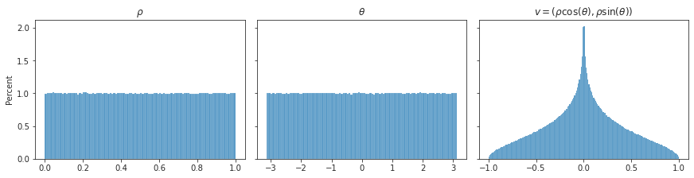
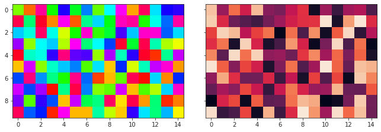
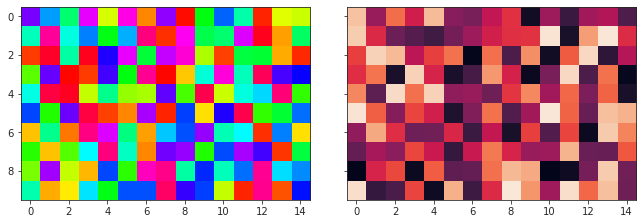
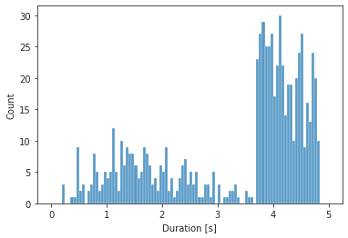
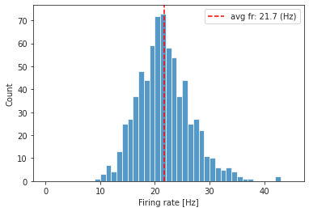

(08) Wild play¶
Motivation:
# HIDE CODE
import os
import sys
from copy import deepcopy as dc
from os.path import join as pjoin
from IPython.display import display, IFrame, HTML
# tmp & extras dir
git_dir = pjoin(os.environ['HOME'], 'Dropbox/git')
extras_dir = pjoin(git_dir, 'jb-MTMST/_extras')
fig_base_dir = pjoin(git_dir, 'jb-MTMST/figs')
tmp_dir = pjoin(git_dir, 'jb-MTMST/tmp')
# GitHub
sys.path.insert(0, pjoin(git_dir, '_MTMST'))
from utils.plotting import *
# warnings, tqdm, & style
warnings.filterwarnings('ignore', category=DeprecationWarning)
from tqdm.notebook import tqdm
from rich.jupyter import print
%matplotlib inline
set_style()
path = '/home/hadi/Documents/MTMST/Wild22/data'
expt = 'amm-MSTn-sun-090-01+01-task'
f = pjoin(path, 'MSTn', f'{expt}.h5')
f = h5py.File(f, 'r')
x = np.array(f['event_value']['SPIKE_channelUnit'])
x.shape
(74089, 1)
sns.histplot(x.ravel())
<AxesSubplot:ylabel='Count'>
x = np.array(f['event_value']['STIM_nDimRDP_posX'])
y = np.array(f['event_value']['STIM_nDimRDP_posY'])
x.shape, y.shape
((726, 1), (726, 1))
x = np.array(f['event_value']['STIM_nDimRDP_probePosition'])
x.shape
(21952,)
start = np.array(f['event_time']['TRIAL_start'])
end = np.array(f['event_time']['TRIAL_end'])
start.shape, end.shape
((728, 1), (728, 1))
duration = (end - start) / 1e6
duration.shape
(728, 1)
duration.sum()
2428.868122
duration.sum() / 60
40.48113536666666
load velocity¶
from scipy import io as sio
mat = sio.loadmat(pjoin('/home/hadi/Desktop', f"{expt}.mat"))
rho = mat['sampleSpeeds'].astype(float).reshape((10, 15, -1))
theta = mat['sampleDirections'].astype(float).reshape((10, 15, -1))
v = np.concatenate([
np.expand_dims(rho * np.cos(theta), 0),
np.expand_dims(rho * np.sin(theta), 0),
])
rho.shape, theta.shape, v.shape
((10, 15, 21952), (10, 15, 21952), (2, 10, 15, 21952))
plt.imshow(rho[..., 0], vmin=0, vmax=1);

fig, axes = create_figure(1, 3, (12, 3), sharey='row', constrained_layout=True)
sns.histplot(rho.ravel(), stat='percent', bins=np.linspace(0, 1, 101), ax=axes[0])
sns.histplot(theta.ravel(), stat='percent', bins=np.linspace(-np.pi, np.pi, 101), ax=axes[1])
sns.histplot(v.ravel(), stat='percent', bins=np.linspace(-1, 1, 201), ax=axes[2])
axes[0].set_title(r'$\rho$')
axes[1].set_title(r'$\theta$')
axes[2].set_title(r'$v = (\rho \cos(\theta), \rho \sin(\theta))$')
plt.show()

kws1 = {
'cmap': 'hsv',
'vmax': np.pi,
'vmin': -np.pi,
}
kws2 = {
'cmap': 'rocket',
'vmax': 1,
'vmin': 0,
}
fig, axes = create_figure(1, 2, (9, 3), 'all', 'all', constrained_layout=True)
axes[0].imshow(theta[..., 0], **kws1)
axes[1].imshow(rho[..., 0], **kws2);

theta[..., 0][0] / np.pi
array([-0.485727, -0.855124, 0.82596 , -0.339394, 0.393438, -0.279297,
0.181391, -0.457322, 0.020875, 0.698079, -0.780676, 0.906142,
0.047214, 0.380633, 0.406617])
Load but bring \(0 \leq \theta \leq 2\pi\)¶
from scipy import io as sio
mat = sio.loadmat(pjoin('/home/hadi/Desktop', f"{expt}.mat"))
rho = mat['sampleSpeeds'].astype(float).reshape((10, 15, -1))
theta = mat['sampleDirections'].astype(float).reshape((10, 15, -1))
theta += 2 * np.pi
theta %= 2 * np.pi
v = np.concatenate([
np.expand_dims(rho * np.cos(theta), 0),
np.expand_dims(rho * np.sin(theta), 0),
])
rho.shape, theta.shape, v.shape
((10, 15, 21952), (10, 15, 21952), (2, 10, 15, 21952))
fig, axes = create_figure(1, 3, (12, 3), sharey='row', constrained_layout=True)
sns.histplot(rho.ravel(), stat='percent', bins=np.linspace(0, 1, 101), ax=axes[0])
sns.histplot(theta.ravel(), stat='percent', bins=np.linspace(0, 2 * np.pi, 101), ax=axes[1])
sns.histplot(v.ravel(), stat='percent', bins=np.linspace(-1, 1, 201), ax=axes[2])
axes[0].set_title(r'$\rho$')
axes[1].set_title(r'$\theta$')
axes[2].set_title(r'$v = (\rho \cos(\theta), \rho \sin(\theta))$')
plt.show()
kws1 = {
'cmap': 'hsv',
'vmax': 2 * np.pi,
'vmin': 0,
}
kws2 = {
'cmap': 'rocket',
'vmax': 1,
'vmin': 0,
}
fig, axes = create_figure(1, 2, (9, 3), 'all', 'all', constrained_layout=True)
axes[0].imshow(theta[..., 0], **kws1)
axes[1].imshow(rho[..., 0], **kws2);

theta[..., 0][0] / np.pi
array([1.514273, 1.144876, 0.82596 , 1.660606, 0.393438, 1.720703,
0.181391, 1.542678, 0.020875, 0.698079, 1.219324, 0.906142,
0.047214, 0.380633, 0.406617])
show_hsv();

load neural data¶
f = pjoin(path, 'MSTn', f'{expt}.h5')
f = h5py.File(f, 'r')
list(f)
['event_time', 'event_value']
n_trials = len(f['event_time']['TRIAL_start'])
n_trials
728
start = np.array(f['event_time']['TRIAL_start'], dtype=float)
end = np.array(f['event_time']['TRIAL_end'], dtype=float)
duration = (trials['end'] - trials['start']) / 1e6
assert len(start) == len(end) == len(duration)
n_trials = len(start)
sns.histplot(duration.ravel(), bins=np.linspace(0, 5, 101))
plt.xlabel('Duration [s]');

spk_times = np.array(f['event_time']['SPIKE_channelUnit'], dtype=float)
spk_times_trial = []
for i in range(n_trials):
x = spk_times[np.logical_and(start[i] - latency <= spk_times, spk_times < end[i])]
spk_times_trial.append((x - start[i]) / 1e3)
fr = []
for i in range(n_trials):
fr.append(len([e for e in spk_times_trial[i] if e >= 0]) / duration[i, 0])
sns.histplot(fr, bins=np.linspace(0, 45, 45 + 1))
plt.axvline(np.mean(fr), color='r', ls='--', label=f'avg fr: {np.mean(fr):0.1f} (Hz)')
plt.xlabel('Firing rate [Hz]')
plt.legend()
plt.show()

f['event_time']['SPIKE_channelUnit'].shape
(74089, 1)
channel = np.array(f['event_value']['SPIKE_channelUnit'], dtype=np.float32)
np.unique(channel)
array([ 1.1, 3.1, 4.1, 5.1, 35.1], dtype=float32)
expt
'amm-MSTn-sun-090-01+01-task'
df_meta = pd.read_csv(pjoin(path, 'meta_data.txt'), sep='\t')
df_meta
| format | recording_session | experimenter | date | monkey | hemisphere | chamber | session_number | daily_count | hardware | ... | Exp_MSTm_st_3 | Exp_MSTt_tt | Exp_MSTt_st_1 | Exp_MSTt_st_2 | Exp_MSTt_st_3 | Exp_MSTn_tt | Exp_MSTn_st_1 | Exp_MSTn_st_2 | Exp_MSTn_st_3 | notes | |
|---|---|---|---|---|---|---|---|---|---|---|---|---|---|---|---|---|---|---|---|---|---|
| 0 | 1 | 1 | amm | 26. Nov 15 | sun | left | 1 | "085" | 01+01 | A-MM1 | ... | 0 | 238 | '1:238' | 0 | 0 | 0 | 0 | 0 | 0 | firing rate increases throughout MSTt |
| 1 | 1 | 2 | amm | 17. Dec 15 | sun | left | 1 | "089" | 01+01 | A-MM1 | ... | 0 | 59 | '1:59' | 0 | 0 | 823 | '1:788' | 0 | 0 | NaN |
| 2 | 1 | 3 | amm | 12. Jan 16 | sun | left | 1 | "090" | 01+01 | A-MM1 | ... | 0 | 91 | '1:91' | 0 | 0 | 728 | '1:728' | 0 | 0 | NaN |
| 3 | 1 | 4 | amm | 13. Jan 16 | sun | left | 1 | "091" | 01+01 | A-MM1 | ... | 0 | 96 | '1:96' | 0 | 0 | 1091 | '1:1091' | 0 | 0 | NaN |
| 4 | 1 | 5 | amm | 14. Jan 16 | sun | left | 1 | "092" | 01+01 | A-MM1 | ... | 0 | 206 | '1:206' | 0 | 0 | 633 | '2:633' | 0 | 0 | NaN |
| ... | ... | ... | ... | ... | ... | ... | ... | ... | ... | ... | ... | ... | ... | ... | ... | ... | ... | ... | ... | ... | ... |
| 134 | 1 | 135 | bew | 10. Oct 18 | igg | right | 1 | "118" | 01+01 | A-MM2 | ... | 0 | 255 | '1:255' | 0 | 0 | 596 | '1:590' | 0 | 0 | NaN |
| 135 | 1 | 136 | bew | 17. Oct 18 | igg | right | 1 | "122" | 01+01 | B-MM2 | ... | 0 | 220 | '1:220' | 0 | 0 | 343 | '1:343' | 0 | 0 | NaN |
| 136 | 1 | 137 | amm | 18. Oct 18 | igg | right | 1 | "123" | 01+01 | B-MM2 | ... | 0 | 184 | '1:184' | '1:184' | 0 | 453 | '1:453' | '1:453' | 0 | NaN |
| 137 | 1 | 138 | amm | 19. Oct 18 | igg | right | 1 | "124" | 01+01 | B-MM2 | ... | 0 | 210 | '1:210' | 0 | 0 | 583 | 1:179,205:583' | 0 | 0 | NaN |
| 138 | 1 | 139 | amm | 22. Oct 18 | igg | right | 1 | "125" | 01+01 | B-MM2 | ... | 0 | 188 | '1:188' | 0 | 0 | 489 | '1:489' | 0 | 0 | NaN |
139 rows × 35 columns
df_meta.loc[
(df_meta['monkey'] == 'sun') &
(df_meta['session_number'] == '"090"')
]
| format | recording_session | experimenter | date | monkey | hemisphere | chamber | session_number | daily_count | hardware | ... | Exp_MSTm_st_3 | Exp_MSTt_tt | Exp_MSTt_st_1 | Exp_MSTt_st_2 | Exp_MSTt_st_3 | Exp_MSTn_tt | Exp_MSTn_st_1 | Exp_MSTn_st_2 | Exp_MSTn_st_3 | notes | |
|---|---|---|---|---|---|---|---|---|---|---|---|---|---|---|---|---|---|---|---|---|---|
| 2 | 1 | 3 | amm | 12. Jan 16 | sun | left | 1 | "090" | 01+01 | A-MM1 | ... | 0 | 91 | '1:91' | 0 | 0 | 728 | '1:728' | 0 | 0 | NaN |
1 rows × 35 columns
f.close()
df_desc = pd.read_excel(pjoin(path, 'data_description.xlsx'))
df_desc
| event name | event description | event_value | event_time | |
|---|---|---|---|---|
| 0 | EYE_pupilSizeLeft_raw | left eye pupil area | integer, raw value (arbitrary unit) | time at which a value was recorded |
| 1 | EYE_pupilSizeRight_raw | right eye pupil area | integer, raw value (arbitrary unit) | time at which a value was recorded |
| 2 | EYE_x_dva | calibrated gaze position | float, in degree visual angle | time at which a value was recorded |
| 3 | EYE_y_dva | calibrated gaze position | float, in degree visual angle | time at which a value was recorded |
| 4 | IO_buttonA | Boolean that specifies whether button is press... | 1 (button pressed) or 0 (button released) | time at which button was pressed or released |
| ... | ... | ... | ... | ... |
| 129 | TRIAL_outcome | outcome of a trial | string, "hit", "failure", or "brokeFixation" | time at which trial outcome was determined |
| 130 | TRIAL_responseEvent | response of the subject | integer, always 1 | time at which the response occured |
| 131 | TRIAL_responseTrigger | change of stimulus to which subject should res... | integer, always 1 | time at which the response trigger occured |
| 132 | TRIAL_start | start of a trial | integer, trial number | time of trial start |
| 133 | TRIAL_type | type of trials | string, "Mapping", "Tuning", or "Reverse Corre... | time at which trial type was assigned |
134 rows × 4 columns
event_value = f['event_value']
event_time = f['event_time']
stim_x = sp_stats.mode(np.array(event_value['STIM_nDimRDP_posX'], float).ravel()).mode.item()
stim_y = sp_stats.mode(np.array(event_value['STIM_nDimRDP_posY'], float).ravel()).mode.item()
stim_x, stim_y
(0.0, 0.0)
stim_x and stim_y specify the center of the rectangular RDP.
Get the coordinate of the center of each of the 15x10 segment
subtract half the stimulus width (45/2 = 22.5) and add half a segment width (3/2 = 1.5) to get the center of the left most segment
subtract half the stimulus height (30/2 = 15) and add half a segment height (3/2 = 1.5) to get the center of the bottom segment
stim_segment_x_coordinates = np.arange(stim_x-22.5+1.5, stim_x+22.5, 3)
stim_segment_y_coordinates = np.arange(stim_y-15+1.5, stim_x+15, 3)
stim_segment_x_coordinates, stim_segment_y_coordinates
(array([-21., -18., -15., -12., -9., -6., -3., 0., 3., 6., 9.,
12., 15., 18., 21.]),
array([-13.5, -10.5, -7.5, -4.5, -1.5, 1.5, 4.5, 7.5, 10.5,
13.5]))
stim_segment_coordinates = [
np.repeat(stim_segment_x_coordinates.reshape(-1, 1), len(stim_segment_y_coordinates)),
np.tile(stim_segment_y_coordinates, (len(stim_segment_x_coordinates), 1))];
np.repeat(stim_segment_x_coordinates, len(stim_segment_y_coordinates)).shape
(150,)
np.tile(stim_segment_y_coordinates, (len(stim_segment_x_coordinates), 1)).shape
(15, 10)
len(stim_segment_y_coordinates)
10
stim_segment_x_coordinates
array([-21., -18., -15., -12., -9., -6., -3., 0., 3., 6., 9.,
12., 15., 18., 21.])
collections.Counter(np.array(event_value['STIM_nDimRDP_sizeX'], float).ravel())
Counter({22.5: 1241})
collections.Counter(np.array(event_value['STIM_nDimRDP_sizeY'], float).ravel())
Counter({15.0: 1241})
np.unique(np.array(event_value['STIM_nDimRDP_type'], str).ravel()).item()
'n_dim_rdp'